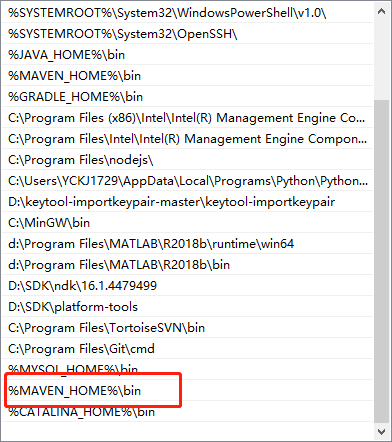
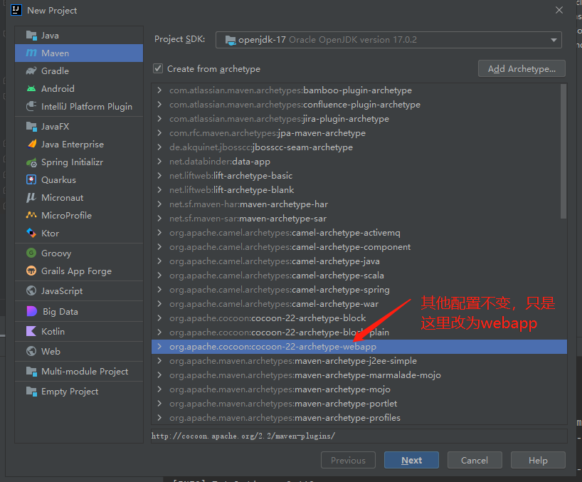

Maven
1、maven相关主要内容
- maven的简介
- maven的安装配置和目录结构
- idea编辑器集成Maven环境
- maven项目的创建
- maven仓库的基本概念
- maven环境下构建多模块项目
- maven的打包操作
- maven依赖的基本概念
2.Maven的简介
Maven是一个Java项目管理和构建工具，它可以定义项目结构、项目依赖，并使用统一的方式进行自动化构建，是Java项目不可缺少的工具。
2.1项目构建工具
Ant构建
Maven（java）
Gradle：Android御用的，结合了ant和Maven的特点，采取了DSL格式
2.2Maven的四大特性
- 依赖管理系统
3.Maven的结构目录
a-maven-project
├── pom.xml
├── src
│ ├── main
│ │ ├── java
│ │ └── resources
│ └── test
│ ├── java
│ └── resources
└── target
解释一下：a-maven-project为项目名；pom.xml为项目描述文件,ser/main/java 为源码目录，src/main/resources 为资源目录，src/test/java存放测试源码目录，src/test/resources存放测试资源，最终所有的编译、打包生成文件都放在target目录里。这些就是一个maven项目标准的目录结构
porm.xml文件格式
<project ...>
<modelVersion>4.0.0</modelVersion>
<groupId>com.itranswarp.learnjava</groupId>
<artifactId>hello</artifactId>
<version>1.0</version>
<packaging>jar</packaging>
<properties>
...
</properties>
<dependencies>
<dependency>
<groupId>commons-logging</groupId>
<artifactId>commons-logging</artifactId>
<version>1.2</version>
</dependency>
</dependencies>
</project>
modelversion指定当前的pom模型的版本，对于Maven3来说只能是4.0.0groupId类似于Java的包名，通常是公司或组织名称，指定了项目属于哪一个组织artifactId类似于Java的类名，通常是项目名称，定义了项目在组织中的唯一的IDversion指定当前包的版本号，x.x.x-里程碑；如1.0.0-SNAPSHOT；其中第一个x 为大版本，在有大变动时升级；第二个x小版本 修复bug，增加功能时使用；第三个x 为开发更新版本
总结：一个Maven工程就是由groupId，artifactId和version作为唯一标识。
一个标准的dependency标准
<dependency>
<groupId>commons-logging</groupId>
<artifactId>commons-logging</artifactId>
<version>1.2</version>
</dependency>
4.安装Maven
4.1 下载maven并完成环境变量配置
1.在官网下载对应的maven版本
2.配置环境变量 MAVEN_HOME ,path


3.命令行检测是否配置成功
mvn -version

4.2 修改本地仓库配置
这里还需要更改一下setting.xml下的配置，用来提升使用效率
Question：为什么需要修改本地maven仓库呢？
answer;因为 Maven 默认的本地仓库在C/用户/.m2 文件夹里，随着下载的 jar 包越来越多，系统盘会越来越满，电脑会越来越卡，所以建议在 C 盘之外建一个本地仓库。
- 1.新建一个目录
- 2.打开maven下setting.xml文件修改核心配置文件
- 3.需要添加的标签如下：
- respository 地址
你的repository目录 例如：
D:\CodeSoftware\Maven\repository
- 4.配置阿里云镜像下载地址
- 在 setting.xml 文件里面添加：
<mirror>
<id>alimaven</id>
<name>aliyun maven</name>
<url>http://maven.aliyun.com/nexus/content/groups/public/</url>;
<mirrorOf>central</mirrorOf>
</mirror>
因为国外远程仓库下载 jar 包速度慢，国内阿里云下载速度快
最后贴一下完整的setting.xml
<?xml version="1.0" encoding="UTF-8"?>
<settings xmlns="http://maven.apache.org/SETTINGS/1.0.0"
xmlns:xsi="http://www.w3.org/2001/XMLSchema-instance"
xsi:schemaLocation="http://maven.apache.org/SETTINGS/1.0.0 http://maven.apache.org/xsd/settings-1.0.0.xsd">
<localRepository>D:\CodeSoftware\maven\repository</localRepository>
<mirrors>
<mirror>
<id>alimaven</id>
<name>aliyun maven</name>
<url>http://maven.aliyun.com/nexus/content/groups/public/</url>
<mirrorOf>central</mirrorOf>
</mirror>
</mirrors>
</settings>
5.依赖管理
┌──────────────┐
│Sample Project│
└──────────────┘
│
▼
┌──────────────┐
│ abc │
└──────────────┘
│
▼
┌──────────────┐
│ xyz │
└──────────────┘
Q：如上面所描述的，如果项目依赖了abc库，而abc库又依赖了xyz库，那么是否在项目中需要在申请abc库的同时又申请xyz库吗？
answer：在maven环境下不需要，当已经配置abc的依赖时，xyz会一起被依赖
5.1依赖关系
Maven定义了几种依赖关系，分别是compile、test、runtime和provided：
| scope | 说明 | 示例 |
|---|---|---|
| compile | 编译时需要用到该jar包（默认） | commons-logging |
| test | 编译Test时需要用到该jar包 | junit |
| runtime | 编译时不需要，但运行时需要用到 | mysql |
| provided | 编译时需要用到，但运行时由JDK或某个服务器提供 | servlet-api |
compile是最常用的，Maven会把这种类型的依赖直接放入classpath中
test依赖表示仅在测试时使用，正常运行时并不需要
runtime依赖表示编译时不需要，但运行时需要
provided依赖表示编译时需要，但运行时不需要。
Q:maven从哪里下载所需依赖？
Answer：https://repo1.maven.org/ 这个是maven的中心仓库，然后将所有的第三发库和自身的jar库托管在中央仓库，本地仓库（前面配置的地址，若没有，就在用户目录的 .m目录下）只要下载一次，下次使用可直接使用本地仓库。
5.2唯一ID
那么是如何定位一个依赖的
groupId：属于组织的名称，类似Java的包名；
artifactId：该jar包自身的名称，类似Java的类名；
version：该jar包的版本。
Maven通过对jar包进行PGP签名确保任何一个jar包一经发布就无法修改。修改已发布jar包的唯一方法是发布一个新版本。
5.3镜像仓库
由于maven中央仓库在外网上，所以下载速度会很慢，我们还可以配置镜像仓库加速依赖构建
slow ┌───────────────────┐
┌─────────────>│Maven Central Repo.│
│ └───────────────────┘
│ │
│ │sync
│ ▼
┌───────┐ fast ┌───────────────────┐
│ User │─────────>│Maven Mirror Repo. │
└───────┘ └───────────────────┘
上面为配置镜像后的依赖路径
<settings>
<mirrors>
<mirror>
<id>aliyun</id>
<name>aliyun</name>
<mirrorOf>central</mirrorOf>
<!-- 国内推荐阿里云的Maven镜像 -->
<url>https://maven.aliyun.com/repository/central</url>
</mirror>
</mirrors>
</settings>
上面为阿里云的镜像maven仓库
5.4 如何寻找第三方库
- 1.https://search.maven.org/ 好用就是每次都需要人机校验
- 2、https://u.tools/ utools 一个工具非常好用，加载maven插件很好用
- 其他工具
5.5 常用命令行
本地发布
mvn clean install -DskipTests
平台发布
mvn clean deploy -Dmaven.test.skip
命令行编译
mvn clean package
其中-D 传入属性参数
例如：mvn package -Dmaven.test.skip=true
其中maven.test.skip代表跳过是否跳过单元测试
其中-P使用指定的Profile配置
6.maven构建流程
Maven的生命周期(lifecycle）由一系列阶段（phase）构成，以内置的生命周期default为例，它具备以下phase：
- validate
- initialize
- generate-sources
- process-sources
- generate-resources
- process-resources
- compile
- process-classes
- generate-test-sources
- process-test-sources
- generate-test-resources
- process-test-resources
- test-compile
- process-test-classes
- test
- prepare-package
- package
- pre-integration-test
- integration-test
- post-integration-test
- verify
- install
- deploy
例如，运行 mvn package,maven执行顺序如下
- validate
- ...
- package
运行mvn compile,maven执行顺序如下
- validate
- ...
- compile
maven另一个声明周期是clean
- pre-clean
- clean （注意这个clean不是lifecycle而是phase）
- post-clean
更高级的例子是同时使用多个phase，例如：mvn clean package;
- Maven先执行
clean生命周期并运行到clean这个phase，然后执行default生命周期并运行到package这个phase，实际执行的phase如下：- pre-clean
- clean （注意这个clean是phase）
- validate
- ...
- package
6.1常用的命令
mvn clean：清理所有生成的class和jar；mvn clean compile：先清理，再执行到compile；mvn clean test：先清理，再执行到test，因为执行test前必须执行compile，所以这里不必指定compile；mvn clean package：先清理，再执行到package。
6.2 Goal
执行一个phase又会触发一个或多个goal：
| 执行的Phase | 对应执行的Goal |
|---|---|
| compile | compiler:compile |
| test | compiler:testCompile surefire:test |
goal的命名总是abc:xyz这种形式。
总结
- lifecycle相当于Java的package，它包含一个或多个phase；
- phase相当于Java的class，它包含一个或多个goal；
- goal相当于class的method，它其实才是真正干活的。
7.Maven插件
自定义插件
<project>
...
<build>
<plugins>
<plugin>
<groupId>org.apache.maven.plugins</groupId>
<artifactId>maven-shade-plugin</artifactId>
<version>3.2.1</version>
<executions>
<execution>
<phase>package</phase>
<goals>
<goal>shade</goal>
</goals>
<configuration>
...
</configuration>
</execution>
</executions>
</plugin>
</plugins>
</build>
</project>
自定义插件往往需要一些配置，例如，maven-shade-plugin需要指定Java程序的入口，它的配置是：
<configuration>
<transformers>
<transformer implementation="org.apache.maven.plugins.shade.resource.ManifestResourceTransformer">
<mainClass>com.itranswarp.learnjava.Main</mainClass>
</transformer>
</transformers>
</configuration>
tips:Maven自带的标准插件例如compiler是无需声明的，只有引入其它的插件才需要声明
常用的插件：
- maven-shade-plugin：打包所有依赖包并生成可执行jar；
- cobertura-maven-plugin：生成单元测试覆盖率报告；
- findbugs-maven-plugin：对Java源码进行静态分析以找出潜在问题。
8.模块管理
在软件开发中，经常把一个较大项目拆分成多个模块，用来降低软件的复杂度
┌─────────┐
│ │Module A │ │
└─────────┘
┌──────────────┐ split │ ┌─────────┐ │
│Single Project│───────> │Module B │
└──────────────┘ │ └─────────┘ │
┌─────────┐
│ │Module C │ │
└─────────┘
└ ─ ─ ─ ─ ─ ─ ┘
上面这个结构的项目就可以被拆分成一下结构：
原始结构
single-project
├── pom.xml
└── src
拆分后的结构
mutiple-project
├── module-a
│ ├── pom.xml
│ └── src
├── module-b
│ ├── pom.xml
│ └── src
└── module-c
├── pom.xml
└── src
这里可以使用Maven管理多个模块，我们只需要把每个模块当做一个独立的Maven项目，它们有各自独立的pom.xml。例如module A：
<project xmlns="http://maven.apache.org/POM/4.0.0"
xmlns:xsi="http://www.w3.org/2001/XMLSchema-instance"
xsi:schemaLocation="http://maven.apache.org/POM/4.0.0 http://maven.apache.org/xsd/maven-4.0.0.xsd">
<modelVersion>4.0.0</modelVersion>
<groupId>com.itranswarp.learnjava</groupId>
<artifactId>module-a</artifactId>
<version>1.0</version>
<packaging>jar</packaging>
<name>module-a</name>
<properties>
<project.build.sourceEncoding>UTF-8</project.build.sourceEncoding>
<project.reporting.outputEncoding>UTF-8</project.reporting.outputEncoding>
<maven.compiler.source>11</maven.compiler.source>
<maven.compiler.target>11</maven.compiler.target>
<java.version>11</java.version>
</properties>
<dependencies>
<dependency>
<groupId>org.slf4j</groupId>
<artifactId>slf4j-api</artifactId>
<version>1.7.28</version>
</dependency>
<dependency>
<groupId>ch.qos.logback</groupId>
<artifactId>logback-classic</artifactId>
<version>1.2.3</version>
<scope>runtime</scope>
</dependency>
<dependency>
<groupId>org.junit.jupiter</groupId>
<artifactId>junit-jupiter-engine</artifactId>
<version>5.5.2</version>
<scope>test</scope>
</dependency>
</dependencies>
</project>
module B的
<project xmlns="http://maven.apache.org/POM/4.0.0"
xmlns:xsi="http://www.w3.org/2001/XMLSchema-instance"
xsi:schemaLocation="http://maven.apache.org/POM/4.0.0 http://maven.apache.org/xsd/maven-4.0.0.xsd">
<modelVersion>4.0.0</modelVersion>
<groupId>com.itranswarp.learnjava</groupId>
<artifactId>module-b</artifactId>
<version>1.0</version>
<packaging>jar</packaging>
<name>module-b</name>
<properties>
<project.build.sourceEncoding>UTF-8</project.build.sourceEncoding>
<project.reporting.outputEncoding>UTF-8</project.reporting.outputEncoding>
<maven.compiler.source>11</maven.compiler.source>
<maven.compiler.target>11</maven.compiler.target>
<java.version>11</java.version>
</properties>
<dependencies>
<dependency>
<groupId>org.slf4j</groupId>
<artifactId>slf4j-api</artifactId>
<version>1.7.28</version>
</dependency>
<dependency>
<groupId>ch.qos.logback</groupId>
<artifactId>logback-classic</artifactId>
<version>1.2.3</version>
<scope>runtime</scope>
</dependency>
<dependency>
<groupId>org.junit.jupiter</groupId>
<artifactId>junit-jupiter-engine</artifactId>
<version>5.5.2</version>
<scope>test</scope>
</dependency>
</dependencies>
</project>
如果在A和B中存在共同的部分作为parent
<project xmlns="http://maven.apache.org/POM/4.0.0"
xmlns:xsi="http://www.w3.org/2001/XMLSchema-instance"
xsi:schemaLocation="http://maven.apache.org/POM/4.0.0 http://maven.apache.org/xsd/maven-4.0.0.xsd">
<modelVersion>4.0.0</modelVersion>
<groupId>com.itranswarp.learnjava</groupId>
<artifactId>parent</artifactId>
<version>1.0</version>
<packaging>pom</packaging>
<name>parent</name>
<properties>
<project.build.sourceEncoding>UTF-8</project.build.sourceEncoding>
<project.reporting.outputEncoding>UTF-8</project.reporting.outputEncoding>
<maven.compiler.source>11</maven.compiler.source>
<maven.compiler.target>11</maven.compiler.target>
<java.version>11</java.version>
</properties>
<dependencies>
<dependency>
<groupId>org.slf4j</groupId>
<artifactId>slf4j-api</artifactId>
<version>1.7.28</version>
</dependency>
<dependency>
<groupId>ch.qos.logback</groupId>
<artifactId>logback-classic</artifactId>
<version>1.2.3</version>
<scope>runtime</scope>
</dependency>
<dependency>
<groupId>org.junit.jupiter</groupId>
<artifactId>junit-jupiter-engine</artifactId>
<version>5.5.2</version>
<scope>test</scope>
</dependency>
</dependencies>
</project>
这样修改后的项目结构为
multiple-project
├── pom.xml
├── parent
│ └── pom.xml
├── module-a
│ ├── pom.xml
│ └── src
├── module-b
│ ├── pom.xml
│ └── src
└── module-c
├── pom.xml
└── src
这样module A可以简化为
<project xmlns="http://maven.apache.org/POM/4.0.0"
xmlns:xsi="http://www.w3.org/2001/XMLSchema-instance"
xsi:schemaLocation="http://maven.apache.org/POM/4.0.0 http://maven.apache.org/xsd/maven-4.0.0.xsd">
<modelVersion>4.0.0</modelVersion>
<parent>
<groupId>com.itranswarp.learnjava</groupId>
<artifactId>parent</artifactId>
<version>1.0</version>
<relativePath>../parent/pom.xml</relativePath>
</parent>
<artifactId>module-a</artifactId>
<packaging>jar</packaging>
<name>module-a</name>
</project>
如果module A 依赖module B，那么module A需要module B的jar包才能正常编译，我们需要在module A中引入 module B
...
<dependencies>
<dependency>
<groupId>com.itranswarp.learnjava</groupId>
<artifactId>module-b</artifactId>
<version>1.0</version>
</dependency>
</dependencies>
在根目录创建一个pom.xml统一编译
<project xmlns="http://maven.apache.org/POM/4.0.0"
xmlns:xsi="http://www.w3.org/2001/XMLSchema-instance"
xsi:schemaLocation="http://maven.apache.org/POM/4.0.0 http://maven.apache.org/maven-v4_0_0.xsd">
<modelVersion>4.0.0</modelVersion>
<groupId>com.itranswarp.learnjava</groupId>
<artifactId>build</artifactId>
<version>1.0</version>
<packaging>pom</packaging>
<name>build</name>
<modules>
<module>parent</module>
<module>module-a</module>
<module>module-b</module>
<module>module-c</module>
</modules>
</project>
这样，在根目录执行mvn clean package时，Maven根据根目录的pom.xml找到包括parent在内的共4个<module>，一次性全部编译。
8.1 中央仓库
其实我们使用的大多数第三方模块都是这个用法，例如，我们使用commons logging、log4j这些第三方模块，就是第三方模块的开发者自己把编译好的jar包发布到Maven的中央仓库中。
8.2 私有仓库
私有仓库是指公司内部如果不希望把源码和jar包放到公网上，那么可以搭建私有仓库。私有仓库总是在公司内部使用，它只需要在本地的~/.m2/settings.xml中配置好，使用方式和中央仓位没有任何区别。
8.3 本地仓库
本地仓库是指把本地开发的项目“发布”在本地，这样其他项目可以通过本地仓库引用它。但是我们不推荐把自己的模块安装到Maven的本地仓库，因为每次修改某个模块的源码，都需要重新安装，非常容易出现版本不一致的情况。更好的方法是使用模块化编译，在编译的时候，告诉Maven几个模块之间存在依赖关系，需要一块编译，Maven就会自动按依赖顺序编译这些模块。
9.使用mvnw
一般情况maven使用mvn这一个命令。但是其实还有一个命令行mvnw
mvnw是Maven Wrapper的缩写。因为我们安装maven时，默认情况下，系统所有项目都会使用全局安装的这个Maven版本。但是，对于某些项目来说，它可能必须使用某个特定的Maven版本，这个时候，就可以使用Maven Wrapper，它可以负责给这个特定的项目安装指定版本的Maven，而其他项目不受影响。
简单地说，Maven Wrapper就是给一个项目提供一个独立的，指定版本的Maven给它使用。
9.1 安装Maven Wrapper
安装Maven Wrapper最简单的方式是在项目的根目录（即pom.xml所在的目录）下运行安装命令：
mvn -N io.takari:maven:0.7.6:wrapper
果要指定使用的Maven版本，使用下面的安装命令指定版本，例如3.3.3：
mvn -N io.takari:maven:0.7.6:wrapper -Dmaven=3.3.3
安装后，查看项目结构：
my-project
├── .mvn
│ └── wrapper
│ ├── MavenWrapperDownloader.java
│ ├── maven-wrapper.jar
│ └── maven-wrapper.properties
├── mvnw
├── mvnw.cmd
├── pom.xml
└── src
├── main
│ ├── java
│ └── resources
└── test
├── java
└── resources
发现多了mvnw、mvnw.cmd和.mvn目录，我们只需要把mvn命令改成mvnw就可以使用跟项目关联的Maven。例如：
mvnw clean package
在Linux或macOs下运行时需要加上./
./mvnw clean package
Maven Wrapper的另一个作用是把项目的mvnw、mvnw.cmd和.mvn提交到版本库中，可以使所有开发人员使用统一的Maven版本。
10.发布自己Artifact
这一章解决了一个问题;那么问题来了：当我们自己写了一个牛逼的开源库时，非常希望别人也能使用，总不能直接放个jar包的链接让别人下载吧？(也不知道有木有)
把自己的库发布到Maven的repo中有好几种方法，我们介绍3种最常用的方法。
10.1 以静态文件发布
实例：开源项目how-to-become-rich
工程目录
how-to-become-rich
├── maven-repo <-- Maven本地文件仓库
├── pom.xml <-- 项目文件
├── src
│ ├── main
│ │ ├── java <-- 源码目录
│ │ └── resources <-- 资源目录
│ └── test
│ ├── java <-- 测试源码目录
│ └── resources <-- 测试资源目录
└── target <-- 编译输出目录
pom.xml中添加如下内容：
<project ...>
...
<distributionManagement>
<repository>
<id>local-repo-release</id>
<name>GitHub Release</name>
<url>file://${project.basedir}/maven-repo</url>
</repository>
</distributionManagement>
<build>
<plugins>
<plugin>
<artifactId>maven-source-plugin</artifactId>
<executions>
<execution>
<id>attach-sources</id>
<phase>package</phase>
<goals>
<goal>jar-no-fork</goal>
</goals>
</execution>
</executions>
</plugin>
<plugin>
<artifactId>maven-javadoc-plugin</artifactId>
<executions>
<execution>
<id>attach-javadocs</id>
<phase>package</phase>
<goals>
<goal>jar</goal>
</goals>
</execution>
</executions>
</plugin>
</plugins>
</build>
</project>
打包命令行
mvn clean package deploy
如果一切顺利，我们就可以在maven-repo目录下找到部署后的所有文件如下：
maven-repo
└── com
└── itranswarp
└── rich
└── how-to-become-rich
├── 1.0.0
│ ├── how-to-become-rich-1.0.0-javadoc.jar
│ ├── how-to-become-rich-1.0.0-javadoc.jar.md5
│ ├── how-to-become-rich-1.0.0-javadoc.jar.sha1
│ ├── how-to-become-rich-1.0.0-sources.jar
│ ├── how-to-become-rich-1.0.0-sources.jar.md5
│ ├── how-to-become-rich-1.0.0-sources.jar.sha1
│ ├── how-to-become-rich-1.0.0.jar
│ ├── how-to-become-rich-1.0.0.jar.md5
│ ├── how-to-become-rich-1.0.0.jar.sha1
│ ├── how-to-become-rich-1.0.0.pom
│ ├── how-to-become-rich-1.0.0.pom.md5
│ └── how-to-become-rich-1.0.0.pom.sha1
├── maven-metadata.xml
├── maven-metadata.xml.md5
└── maven-metadata.xml.sha1
最后一步，是把这个工程推到GitHub上，并选择Settings-GitHub Pages，选择master branch启用Pages服务：
这样，把全部内容推送至GitHub后，即可作为静态网站访问Maven的repo，它的地址是https://michaelliao.github.io/how-to-become-rich/maven-repo/。版本`1.0.0`对应的jar包地址是：
https://michaelliao.github.io/how-to-become-rich/maven-repo/com/itranswarp/rich/how-to-become-rich/1.0.0/how-to-become-rich-1.0.0.jar
其他人使用maven包的方式
<dependency>
<groupId>com.itranswarp.rich</groupId>
<artifactId>how-to-become-rich</artifactId>
<version>1.0.0</version>
</dependency>
与此同时我们需要添加一个<repository>的声明
<project xmlns="http://maven.apache.org/POM/4.0.0"
xmlns:xsi="http://www.w3.org/2001/XMLSchema-instance"
xsi:schemaLocation="http://maven.apache.org/POM/4.0.0 http://maven.apache.org/xsd/maven-4.0.0.xsd">
<modelVersion>4.0.0</modelVersion>
<groupId>example</groupId>
<artifactId>how-to-become-rich-usage</artifactId>
<version>1.0-SNAPSHOT</version>
<packaging>jar</packaging>
<properties>
<maven.compiler.source>11</maven.compiler.source>
<maven.compiler.target>11</maven.compiler.target>
<java.version>11</java.version>
</properties>
<repositories>
<repository>
<id>github-rich-repo</id>
<name>The Maven Repository on Github</name>
<url>https://michaelliao.github.io/how-to-become-rich/maven-repo/</url>
</repository>
</repositories>
<dependencies>
<dependency>
<groupId>com.itranswarp.rich</groupId>
<artifactId>how-to-become-rich</artifactId>
<version>1.0.0</version>
</dependency>
</dependencies>
</project>
10.2 通过Nexus发布到中央仓库
我们不能直接发布到Maven中央仓库，而是通过曲线救国的方式，发布到central.sonatype.org，它会定期自动同步到Maven的中央仓库。Nexus是一个支持Maven仓库的软件，由Sonatype开发，有免费版和专业版两个版本，很多大公司内部都使用Nexus作为自己的私有Maven仓库，而这个central.sonatype.org相当于面向开源的一个Nexus公共服务
第一步是在central.sonatype.org上注册一个账号，注册链接非常隐蔽，可以自己先找找，找半小时没找到点这里)查看攻略。
这里简单提一下发布重点与难点：
- 必须正确创建GPG签名，Linux和Mac下推荐使用gnupg2；
- 必须在
~/.m2/settings.xml中配置好登录用户名和口令，以及GPG口令：
<settings ...>
...
<servers>
<server>
<id>ossrh</id>
<username>OSSRH-USERNAME</username>
<password>OSSRH-PASSWORD</password>
</server>
</servers>
<profiles>
<profile>
<id>ossrh</id>
<activation>
<activeByDefault>true</activeByDefault>
</activation>
<properties>
<gpg.executable>gpg2</gpg.executable>
<gpg.passphrase>GPG-PASSWORD</gpg.passphrase>
</properties>
</profile>
</profiles>
</settings>
在待发布的Artifact的pom.xml中添加OSS的Maven repo地址，以及maven-jar-plugin、maven-source-plugin、maven-javadoc-plugin、maven-gpg-plugin、nexus-staging-maven-plugin：
<project ...>
...
<distributionManagement>
<snapshotRepository>
<id>ossrh</id>
<url>https://oss.sonatype.org/content/repositories/snapshots</url>
</snapshotRepository>
<repository>
<id>ossrh</id>
<name>Nexus Release Repository</name>
<url>http://oss.sonatype.org/service/local/staging/deploy/maven2/</url>
</repository>
</distributionManagement>
<build>
<plugins>
<plugin>
<groupId>org.apache.maven.plugins</groupId>
<artifactId>maven-jar-plugin</artifactId>
<executions>
<execution>
<goals>
<goal>jar</goal>
<goal>test-jar</goal>
</goals>
</execution>
</executions>
</plugin>
<plugin>
<groupId>org.apache.maven.plugins</groupId>
<artifactId>maven-source-plugin</artifactId>
<executions>
<execution>
<id>attach-sources</id>
<goals>
<goal>jar-no-fork</goal>
</goals>
</execution>
</executions>
</plugin>
<plugin>
<groupId>org.apache.maven.plugins</groupId>
<artifactId>maven-javadoc-plugin</artifactId>
<executions>
<execution>
<id>attach-javadocs</id>
<goals>
<goal>jar</goal>
</goals>
<configuration>
<additionalOption>
<additionalOption>-Xdoclint:none</additionalOption>
</additionalOption>
</configuration>
</execution>
</executions>
</plugin>
<plugin>
<groupId>org.apache.maven.plugins</groupId>
<artifactId>maven-gpg-plugin</artifactId>
<executions>
<execution>
<id>sign-artifacts</id>
<phase>verify</phase>
<goals>
<goal>sign</goal>
</goals>
</execution>
</executions>
</plugin>
<plugin>
<groupId>org.sonatype.plugins</groupId>
<artifactId>nexus-staging-maven-plugin</artifactId>
<version>1.6.3</version>
<extensions>true</extensions>
<configuration>
<serverId>ossrh</serverId>
<nexusUrl>https://oss.sonatype.org/</nexusUrl>
<autoReleaseAfterClose>true</autoReleaseAfterClose>
</configuration>
</plugin>
</plugins>
</build>
</project>
最后执行命令
mvn clean package deploy
完成发布
10.3 发布到私有仓库
通过nexus-staging-maven-plugin除了可以发布到central.sonatype.org外，也可以发布到私有仓库，例如，公司内部自己搭建的Nexus服务器。
如果没有私有Nexus服务器，还可以发布到GitHub Packages。GitHub Packages是GitHub提供的仓库服务，支持Maven、NPM、Docker等。使用GitHub Packages时，无论是发布Artifact，还是引用已发布的Artifact，都需要明确的授权Token，因此，GitHub Packages只能作为私有仓库使用。
在发布前，我们必须首先登录后在用户的Settings-Developer settings-Personal access tokens中创建两个Token，一个用于发布，一个用于使用。发布Artifact的Token必须有repo、write:packages和read:packages权限：
在发布端，把GitHub的用户名和发布Token写入~/.m2/settings.xml配置中：
<settings ...>
...
<servers>
<server>
<id>github-release</id>
<username>GITHUB-USERNAME</username>
<password>f052...c21f</password>
</server>
</servers>
</settings>
然后，在需要发布的Artifact的pom.xml中，添加一个<repository>声明：
<project ...>
...
<distributionManagement>
<repository>
<id>github-release</id>
<name>GitHub Release</name>
<url>https://maven.pkg.github.com/michaelliao/complex</url>
</repository>
</distributionManagement>
</project>
注意到<id>和~/.m2/settings.xml配置中的<id>要保持一致，因为发布时Maven根据id找到用于登录的用户名和Token，才能成功上传文件到GitHub。我们直接通过命令mvn clean package deploy部署，成功后，在GitHub用户页面可以看到该Artifact：
使用该Artifact时，因为GitHub的Package只能作为私有仓库使用，所以除了在使用方的pom.xml中声明<repository>外：
<project ...>
...
<repositories>
<repository>
<id>github-release</id>
<name>GitHub Release</name>
<url>https://maven.pkg.github.com/michaelliao/complex</url>
</repository>
</repositories>
<dependencies>
<dependency>
<groupId>com.itranswarp</groupId>
<artifactId>complex</artifactId>
<version>1.0.0</version>
</dependency>
</dependencies>
...
</project>
还需要把有读权限的Token配置到~/.m2/settings.xml文件中。
11.idea 集成maven环境
11.1 配置maven
11.2 创建maven项目
11.2.1 java项目

设置groupid和artifactid
如何配置编译？

选择指令和编译的目录
也可以用右侧的maven plugin
11.2.2 创建web项目

其他配置和java项目一样
补充：Tomcat配置
先下载Tomcat，完成安装，并启动